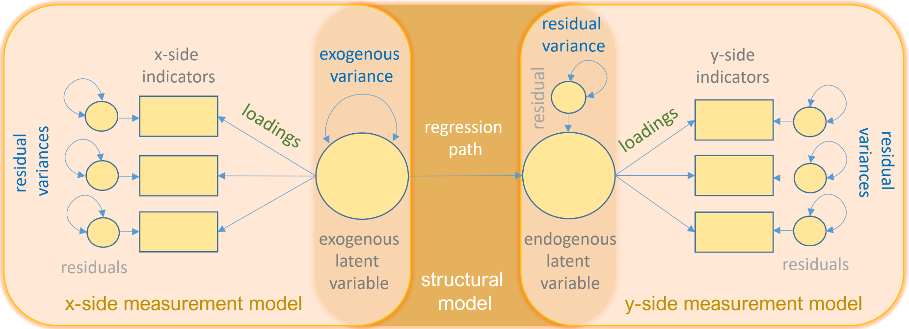

Представьтесь
Предварительные замечания
Моделирование структурными уравнениями (SEM, от англ. Structural Equation Modeling) — семейство статистических методов, которое объединяет анализ путей (path analysis) и анализ латентных переменных в единой модели, что дает возможность протестировать множество исследовательских гипотез одновременно.
В отличие от регрессии, SEM позволяет:
- работать с латентными конструктами (переменными, которые нельзя измерить напрямую: доверие, благополучие, социальный капитал и др.);
- оценивать ошибку измерения явным образом;
- проверять как измерительную, так и структурную части модели одновременно;
- тестировать сложные причинно-следственные цепочки, включая медиацию и модерацию.
SEM широко применяется в:
- социологии (изучение неравенства, мобильности, межнациональных отношений, ценностных ориентаций, социальной напряженности и конфликтов, маркетинговые исследования);
- психологии (например, при изучении взаимовлияния между личностными свойствами, психического благополучия, стресса, личностной зрелости и других интересных тем);
- политической науке (гражданское участие, институциональное доверие);
- экономике (измерение качества жизни, человеческого капитала, социально-экономического развития регионов и др.).
Компоненты модели
Модель SEM состоит из двух частей.
Модель измерения (measurement model) – задает, как наблюдаемые переменные (\(y_i\)) соотносятся с латентными факторами (\(\eta\)):
\[ y_i = \lambda_i \eta + \varepsilon_i \]
где \(\lambda_i\) —- факторная нагрузка, \(\varepsilon_i\) — ошибка измерения. Эта часть модели тестируется с помощью методов конфирматорного факторного анализа. Например, в нашем исследовании есть задачи по оценке участия граждан в реализации инициатив, направленных на городское развитие. Мы провели операционализацию и определили индикаторы такого участия, измерили их, проведя социологическое исследование. Задача данного этапа будет заключаться в обосновании, действительно ли индикаторы измеряют нечто общее, то, что можно назвать гражданским участием.
Структурная модель (structural model) описывает связи между латентными конструктами и наблюдаемыми переменными (которые не нужно измерять дополнительно):
\[ \eta = B\eta + \Gamma\xi + \zeta \]
где \(B\) — матрица путей между эндогенными конструктами, \(\Gamma\) — матрица путей от экзогенных конструктов, \(\zeta\) — структурные остатки. Например, мы можем посмотреть, как на гражданское участие влияют разные факторы, такие как доход или образование, а также ввести в модель еще один латентный фактор (допустим, институциональное доверие, которое мы оценим на основе батареи шкал доверия к разным социальным институтам), и выявить, как влияет доверие на уровень участия (Kline 2016).

(Group 2016)Оценка модели и индексы подгонки
В SEM важно различать два уровня: как оцениваются параметры (оцениватель, тип матрицы) и как оценивается качество модели в целом (индексы подгонки).
- Для приблизительно непрерывных, нормально
распределенных показателей (классический случай) по умолчанию
используется метод ML (maximum likelihood), который
минимизирует расхождение между модельной и эмпирической матрицами
ковариаций.
- При ненормальности часто применяют робастные
варианты ML:
При обсуждении выбора оценивателя в SEM обычно отдельно рассматривают случай ненормальных данных и анализ переменных порядкового типа (например, шкалы Лайкерта). Ниже приведены краткие характеристики основных методов в форме, подходящей для учебного пособия.
Оцениватели при отсутствии нормального распределения
MLR (Maximum Likelihood Robust) – представляет собой модификацию максимального правдоподобия, в которой стандартные ошибки и статистика \(\chi^2\) корректируются на отклонения распределения от нормального. Такой подход позволяет получать более надежные выводы при умеренной ненормальности, сохраняя при этом интерпретацию параметров, аналогичную классическому ML.
MLM / MLMV (Satorra–Bentler и родственные варианты) – используют корректировку статистики согласия \(\chi^2\) с учетом избыточной или недостаточной дисперсии при ненормальности. В варианте MLMV дополнительный акцент делается на корректировку ковариационной матрицы, что улучшает свойства тестов согласия и доверительных интервалов в условиях сильной ненормальности. Эти методы часто рекомендуются, когда данные заметно отклоняются от многомерной нормальности, но сохраняется количественный характер переменных.
WLSMV (Weighted Least Squares Mean and Variance adjusted) – применяется при моделировании порядковых, бинарных и смешанных переменных, объявленных как
ordered. Он основан на методе взвешенных наименьших квадратов, но включает робастные стандартные ошибки и модифицированную статистику \(\chi^2\), скорректированную по среднему и дисперсии. На практике WLSMV рассматривается как один из наиболее устойчивых и рекомендуемых вариантов для рейтинговых шкал (например, Лайкерта), особенно при умеренных и больших объемах выборки.DWLS (Diagonal Weighted Least Squares) – является упрощенной версией WLS, в которой используется только диагональ весовой матрицы, то есть отдельные веса для каждой переменной без учета всех парных ковариаций в весах. Это снижает вычислительную нагрузку и делает метод применимым для моделей с большим числом индикаторов, однако часть информации о структуре ошибок в весах игнорируется. DWLS часто используется как практический компромисс между точностью и вычислительной эффективностью при анализе моделей с большим количеством порядковых показателей.
Индексы подгонки
После оценки модели исследователь проверяет, насколько хорошо она отражает эмпирические данные — для этого используются различные индексы подгонки:
- Абсолютные индексы:
- \(\chi^2\) — тестирует точное
совпадение модели с данными; при больших выборках почти всегда значим,
поэтому его используют скорее как ориентир.
- SRMR (Standardized Root Mean Square Residual) показывает среднюю величину несоответствия между корреляциями, полученными из данных, и корреляциями, предсказанными моделью.
- \(\chi^2\) — тестирует точное
совпадение модели с данными; при больших выборках почти всегда значим,
поэтому его используют скорее как ориентир.
- Индексы относительной подгонки (инкрементные):
- CFI, TLI — сравнивают модель с «нулевой» (где
переменные независимы).
- CFI, TLI — сравнивают модель с «нулевой» (где
переменные независимы).
- Индексы приближенной подгонки:
- RMSEA — оценивает степень несовпадения модели с данными в пересчете на единицу степени свободы; для него часто приводят доверительный интервал.
Типичные ориентиры для интерпретации коэффициентов:
| Индекс | Приемлемая подгонка | Хорошая подгонка |
|---|---|---|
| \(\chi^2/df\) | < 5.0 | < 2.0 |
| CFI, TLI | > 0.90 | > 0.95 |
| RMSEA | < 0.08 | < 0.06 |
| SRMR | < 0.08 | < 0.05 |
Важно отметить, что при использовании WLSMV/DWLS интерпретация этих индексов в целом сохраняется, но χ² и RMSEA основываются на приближенных формулах, а значения могут систематически отличаться от ML‑оцененных моделей; сравнивать модели с разными типами оценивателей по \(\chi^2\) и RMSEA некорректно.
На практике часто смотрят не только на отдельные значения CFI, RMSEA и SRMR, но и на изменение этих индексов при усложнении/ограничении модели (например, в тестах инвариантности: \(\Delta CFI\), \(\Delta RMSEA\)), а также комбинируют оценку подгонки с содержательной интерпретируемостью параметров и простотой модели.
SEM в R
В литературе по структурным уравнениям в R обычно выделяют две группы инструментов: основные пакеты для спецификации и оценки SEM‑моделей и дополнительные пакеты, ориентированные на визуализацию, отчетность и вспомогательные процедуры.
Основные пакеты:
- lavaan — пакет для создания моделей структурных
уравнений на основе синтаксиса, создающего формулу модели. Ориентирован
на классический SEM в прикладных исследованиях.
- sem — реализация SEM в матричной форме, отражающая
традиционный ковариационно‑структурный подход к заданию моделей.
- OpenMx — гибкий фреймворк для сложных и
нестандартных структурных моделей с матричным описанием и высоким
уровнем контроля.
- semPlot — инструмент для графической визуализации
путевых диаграмм и структуры SEM‑моделей.
- semTools — набор вспомогательных процедур для
оценки надежности, инвариантности и дополнительной диагностики моделей в
SEM.
- sjPlot / report — пакеты для автоматизированного
табличного и текстового представления результатов моделирования,
пригодные для оформления SEM‑анализов.
- lavaanPlot — специализированный инструмент для
построения наглядных диаграмм моделей lavaan с возможностью настройки
подписей и оформления.
- lavaanExtra — набор дополнительных функций, упрощающих выполнение типичных операций с моделями lavaan и подготовку результатов к представлению.
Библиотека lavaan
Пакет lavaan (Latent Variable Analysis) — это один из ключевых инструментов для выполнения моделей структурных уравнений (SEM) в R. Он позволяет исследователю задавать и оценивать модели с латентными переменными — такими как факторные модели, модели путей, а также их комбинации. В основе lavaan лежит синтаксис, похожий на формулировку уравнений, что делает его удобным для описания как простых CFA (Confirmatory Factor Analysis), так и сложных структур с несколькими уровнями и связями.
Пакет lavaan был разработан бельгийским статистиком и психометриком Ивом Росселем (Yves Rosseel) как современная, открытая и воспроизводимая реализация моделей структурных уравнений. Его развитие началось в конце 2000‑х годов, а первые стабильные версии стали широко использоваться в исследовательской среде примерно с начала 2010‑х (Rosseel 2012). О популярности данной библиотеки можно судить по количеству цитирований: на статью «lavaan: An R package for structural equation modeling» сослались более 34 тыс. ученых со всего мира.
Lavaan имеет удобные функции для проверки подгонки модели, он автоматически вычисляет распространенные индексы, такие как CFI, TLI, RMSEA и SRMR, позволяет строить доверительные интервалы, тестировать ограничения параметров и сравнивать модели. Пакет интегрируется с инструментами визуализации и отчетности (например, semPlot, lavaanPlot, semTools, lavaanExtra), что делает его основой для обучения и прикладного анализа в социальных, психологических и образовательных исследованиях.
Синтаксис lavaan
В пакете lavaan модели задаются в виде строки с
операторами:
=~— определение латентной переменной («измеряется через»);~— регрессионный путь («зависит от»);~~— ковариация или дисперсия;~1— интерцепт переменной.
Типичный пример кода:
# модель
cfa_model <- '
trust =~ trust1 + trust2 + trust3 # trust измеряется trust1, trust2, trust3
wellbeing =~ wb1 + wb2 + wb3
'
fit <- cfa(cfa_model, data = social_data)
summary(fit, fit.measures = TRUE, standardized = TRUE)Данные: социальное благополучие молодежи
В этом тьюториале используются смоделированные данные по образцу реальных опросов о социальном благополучии молодежи (N = 500 респондентов).
Данные содержат 9 индикаторов трех латентных конструктов и переменную пола:
| Переменная | Конструкт | Содержание |
|---|---|---|
trust1 |
Доверие | Доверие правительству |
trust2 |
Доверие | Доверие судебной системе |
trust3 |
Доверие | Доверие полиции |
wb1 |
Благополучие | Удовлетворенность жизнью |
wb2 |
Благополучие | Ощущение счастья |
wb3 |
Благополучие | Позитивный аффект |
civic1 |
Гражд. активность | Участие в голосовании |
civic2 |
Гражд. активность | Участие в общественных организациях |
civic3 |
Гражд. активность | Волонтерство |
sex |
— | Пол (мужчины / женщины) |
Теоретические гипотезы:
- Каждый конструкт хорошо измеряется своими индикаторами (CFA).
- Структура измерения одинакова для мужчин и женщин (инвариантность).
- Доверие институтам положительно предсказывает гражданскую активность и субъективное благополучие (структурные пути).
Упражнения: Модель измерения (CFA)
Упражнение 1 — Знакомство с данными
Изучите структуру набора данных social_data.
- Выведите первые 6 строк с помощью
head(). - Проверьте структуру данных с помощью
str().
# ваш код# head(social_data)
# str(social_data)Упражнение 2 — Создание модели CFA
Задайте модель конфирматорного факторного анализа.
- Создайте строку
cfa_model, которая определяет три фактора:trust— измеряется черезtrust1,trust2,trust3wellbeing— измеряется черезwb1,wb2,wb3civic— измеряется черезcivic1,civic2,civic3
- Оцените модель функцией
cfa()на данныхsocial_data; сохраните вfit_cfa.
cfa_model <- '
# ваш синтаксис
'
fit_cfa <- ___(___, data = ___)# cfa_model <- '
# trust =~ trust1 + trust2 + trust3
# wellbeing =~ wb1 + wb2 + wb3
# civic =~ civic1 + civic2 + civic3
# '
# fit_cfa <- cfa(cfa_model, data = social_data)Упражнение 3 — Итоги CFA
Выведите итоговый отчет по модели с помощью
summary().
- Используйте аргументы
fit.measures = TRUEиstandardized = TRUE.
# ваш код# summary(fit_cfa, fit.measures = TRUE, standardized = TRUE)Упражнение 4 — Индексы подгонки
Извлеките ключевые индексы подгонки модели с помощью
fitmeasures().
- Запросите:
"chisq","df","pvalue","cfi","rmsea","srmr". - Сохраните результат в
fit_indices.
fit_indices <- fitmeasures(___, c("chisq", "df", "pvalue", "cfi", "rmsea", "srmr"))
fit_indices# fit_indices <- fitmeasures(fit_cfa, c("chisq", "df", "pvalue", "cfi", "rmsea", "srmr"))
# fit_indicesУпражнение 5 — Визуализация модели CFA
Постройте диаграмму пути для модели CFA с помощью
semPaths().
- Используйте
model = fit_cfaдля отображения результатов конфирматорного анализа. - Добавьте
stand = TRUE,stars = "latent".
lavaanPlot(
model = ___,
stand = ___,
coeffs= ___,
stars = ___
)# lavaanPlot(model = fit_cfa, stand = TRUE, coefs = TRUE, stars = "latent")Упражнения: Проверка инвариантности измерения
Проверка инвариантности измерения позволяет убедиться, что один и тот же конструкт одинаково понимается и измеряется в разных группах (например, у мужчин и женщин).
Процедура включает последовательное тестирование нескольких моделей:
- Конфигуральная — одинаковая структура (те же факторы, те же индикаторы), но все параметры свободны в каждой группе.
- Метрическая — дополнительно ограничиваются факторные нагрузки (проверяется гипотеза об их равенстве в группах).
- Скалярная — дополнительно ограничиваются интерцепты индикаторов.
Если скалярная модель подходит не хуже метрической (\(\Delta CFI < 0.010\), \(\Delta RMSEA < 0.015\)), то сравнение средних значений латентных конструктов корректно.
Упражнение 6 — Конфигуральная модель
Оцените конфигуральную модель инвариантности: аргумент
group = "sex" без дополнительных ограничений.
fit_config <- cfa(
___,
data = ___,
group = ___
)
summary(fit_config, fit.measures = TRUE)# fit_config <- cfa(cfa_model, data = social_data, group = "sex")
# summary(fit_config, fit.measures = TRUE)Упражнение 7 — Метрическая и скалярная модели
- Оцените метрическую модель:
group.equal = "loadings", результат —fit_metric. - Оцените скалярную модель:
group.equal = c("loadings", "intercepts"), результат —fit_scalar.
fit_metric <- cfa(
cfa_model, data = social_data, group = "sex",
group.equal = ___
)
fit_scalar <- cfa(
cfa_model, data = social_data, group = "sex",
group.equal = ___
)# fit_metric <- cfa(cfa_model, data = social_data, group = "sex",
# group.equal = "loadings")
# fit_scalar <- cfa(cfa_model, data = social_data, group = "sex",
# group.equal = c("loadings", "intercepts"))Упражнение 8 — Сравнение моделей инвариантности
Используйте lavTestLRT() для сравнения трех моделей
инвариантности.
lrt_result <- lavTestLRT(___, ___, ___)
lrt_result# lrt_result <- lavTestLRT(fit_config, fit_metric, fit_scalar)
# lrt_resultДействительно, получившиеся результаты указывают на то, что в нашей модели достингута только метрическая инвариантность.
- При метрической, но не скалярной инвариантности сравнивать можно связи (регрессионные коэффициенты, ковариации факторов), но сравнение латентных средних считается методологически проблемным, потому что часть различий может быть связана именно с сдвигами интерцептов индикаторов. Источник для чтения
- Если удается построить модель частичной скалярной инвариантности (часть интерцептов равны, часть свободны), сравнение сред по соответствующим факторам допускается, но интерпретация должна опираться только на «инвариантный» набор индикаторов. pmc.ncbi.nlm.nih
Упражнения: Структурная модель
Упражнение 9 — Задание структурной модели SEM
Задайте полную SEM-модель: измерительная часть (CFA) + структурные пути.
wellbeingзависит отtrustиcivic;civicзависит отtrust.
sem_model <- '
# Модель измерения
trust =~ trust1 + trust2 + trust3
wellbeing =~ wb1 + wb2 + wb3
civic =~ civic1 + civic2 + civic3
# Структурные пути (ваш код)
___
___
'
fit_sem <- sem(___, data = ___)
summary(fit_sem, fit.measures = TRUE, standardized = TRUE)# sem_model <- '
# trust =~ trust1 + trust2 + trust3
# wellbeing =~ wb1 + wb2 + wb3
# civic =~ civic1 + civic2 + civic3
# wellbeing ~ trust + civic
# civic ~ trust
# '
# fit_sem <- sem(sem_model, data = social_data)
# summary(fit_sem, fit.measures = TRUE, standardized = TRUE)Упражнение 10 — Интерпретация путей SEM
Извлеките стандартизованные оценки параметров с помощью
parameterEstimates().
struct_params <- parameterEstimates(
fit_sem,
standardized = ___,
rsquare = ___
) |>
dplyr::filter(op == "~")
struct_params# struct_params <- parameterEstimates(
# fit_sem,
# standardized = TRUE,
# rsquare = TRUE
# ) |>
# dplyr::filter(op == "~")
# struct_paramsТестовые вопросы
Вопрос 1
Что такое латентная переменная в SEM?
Вопрос 2
В чем принципиальное отличие CFA от EFA?
Вопрос 3
Что означает оператор =~ в синтаксисе lavaan?
Вопрос 4
Что означает оператор ~ в синтаксисе lavaan?
Вопрос 5
Какой индекс подгонки RMSEA считается хорошим?
Вопрос 6
Что тестирует конфигуральная модель инвариантности?
Вопрос 7
Что позволяет делать скалярная инвариантность, но не позволяет метрическая?
Вопрос 8
Какой тест используется в lavaan для сравнения вложенных моделей инвариантности?
Вопрос 9
Какой индекс подходит как дополнительный критерий при сравнении моделей инвариантности?
Вопрос 10
Что такое «идентификация модели» в SEM?
Вопрос 11
Как в lavaan по умолчанию фиксируется масштаб латентной переменной при CFA?
Вопрос 12
Что такое «модификационные индексы» (modification indices) в SEM?
Вопрос 13
Что такое «медиация» в контексте SEM?
Вопрос 14
Как вычислить косвенный эффект в lavaan?
Вопрос 15
Что означает R² для латентной переменной (эндогенного конструкта) в SEM?
Источники
Сохранить ответы
- Нажмите на кнопку, чтобы загрузить файл, содержащий Ваши ответы, в формате HTML.
- Сохраните файл на компьютере, а потом загрузите его в качестве ответа на странице курса.
(Если файл не загружается, попробуйте сохранить его, нажав правую кнопку мыши и выбрав "Сохранить ссылку как...")